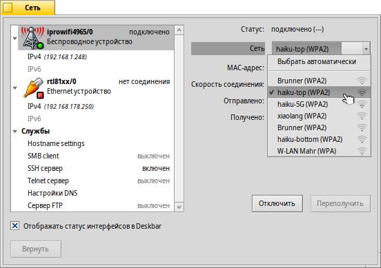
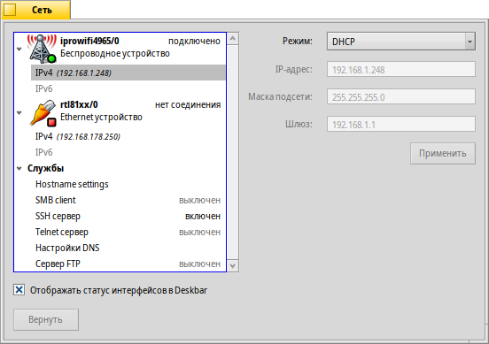
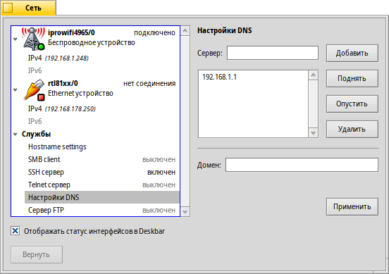
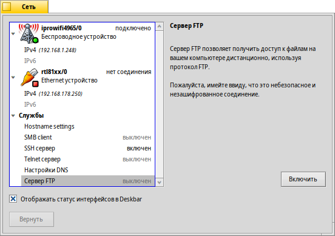

Русский
Русский Català
Català Deutsch
Deutsch English
English Español
Español Français
Français Italiano
Italiano Magyar
Magyar Polski
Polski Português
Português Português (Brazil)
Português (Brazil) Română
Română Slovenčina
Slovenčina Suomi
Suomi Svenska
Svenska 中文 ［中文］
中文 ［中文］ Українська
Українська 日本語
日本語Сеть
| Расположение в Deskbar: | ||
| Расположение в Tracker: | /boot/system/preferences/Network | |
| Настройки хранятся по адресу: | /boot/system/settings/network/ |
The Network preference is the one-stop panel to configure all available network devices and services. To the left is a collapsible list of your devices and services, the right has information or settings for the selected entry.
At the bottom you find a checkbox to . brings back the settings that were active when you've started the panel.
Devices
Here we see the wireless device, using the iprowifi4965 driver. From the pop-up menu you select the WLAN to connect to. After every WLAN name in the menu, you're shown a little icon representing the signal strength.
Once a WLAN is selected, Haiku will try to connect to it automatically on every bootup. Select and it'll try to connect to the WLAN with the best signal around.
If you're connecting to a protected network, you'll be asked for the password and if to either allow that connection only once, or always, which will save the password so you won't be bothered to enter it in the future.
The buttons below let you the device, or the connection.
Beneath a device you find a list of the available protocols, IPv4 and IPv6:
From the pop-up menu you set the mode to assign the vital network parameters , and . You can choose to dynamically get the configuration from your network (router etc.), or specify them yourself by selecting and pressing when finished.
The settings for a tethered device are similar, without the WLAN connecting pop-up menu, obviously.
Services
DNS settings
If you're using DHCP the IP address for a DNS server and the domain are provided by you network (router etc.). You can add and remove other DNS servers and adjust their priorities by moving them up and down in the list with the buttons to the right of it.
will activate your new settings.
FTP, SSH, Telnet
Haiku provides a few servers that you can or . On the right side of the window, you'll find information on that particular server that you should heed: The FTP and the Telnet server are insecure and unencrypted. By default they're turned off and should only be turned on, if you're aware of the security risks.
Settings files
The network settings are found in the folder /system/settings/network/. Normally you don't have to care about those, other than maybe having to delete them to begin with a clean slate after things have gone terribly wrong...
One file however can be really useful, especially when working from the Terminal. The hosts file lets you define aliases to specific IP addresses in the network. For example:
127.0.0.1 localhost #loopback 192.168.178.3 NAS #Synology 192.168.178.102 XIOS #Mediaplayer
Besides the loopback to the localhost, I have the IP to my Synology storage under "NAS" and to my media player under "XIOS". To start an FTP session with my network storage, I don't have to remember it's IP address, but can simply enter:
ftp NAS